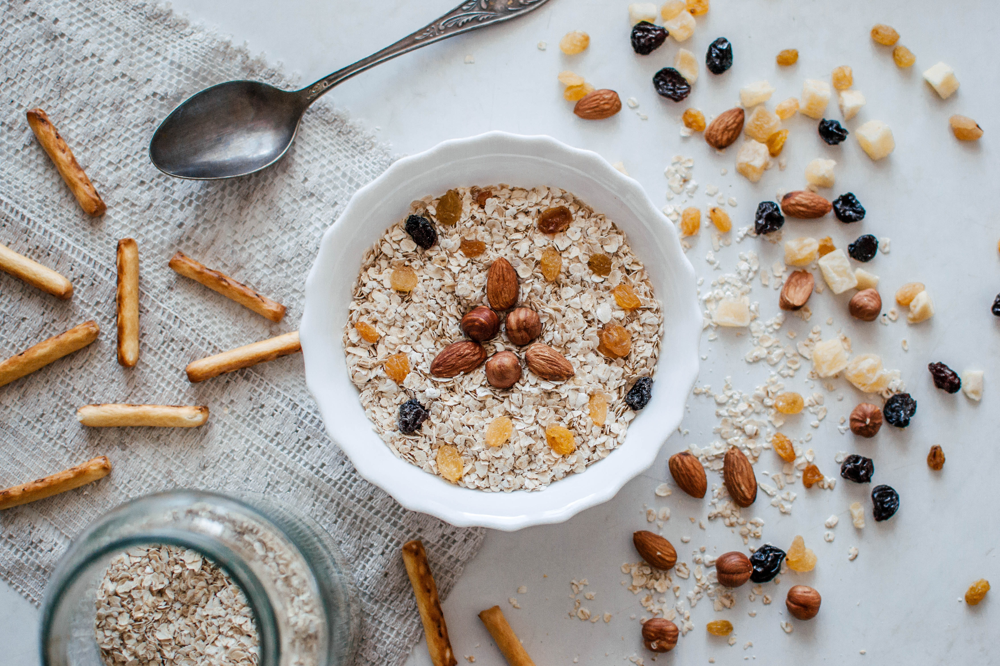

오래 전부터 스코틀랜드에서 분쇄한 귀리의 형태로 이용하였다. 귀리의 껍질이 단단하여 잘 벗겨지지 않고 보통의 제분으로는 섬유질이 많이 남아 위장을 자극하므로, S.존슨이 쓴 《영어사전》(1775)에는, “스코틀랜드에서는 사람이 먹고 잉글랜드에서는 말이 먹는다”고 기록되어 있다. 1884년에 압맥기가 발명되어 단시간에 조리할 수 있고 소화가 잘 되게 가공했으며 19세기 말~20세기 초에 걸쳐 기업적으로 생산하여 보급시켰다. 제법은, 귀리를 정백(精白)하여 껍질을 벗기고 충분히 건조시킨 후 적당히 볶아 분쇄기로 거칠게 분쇄하거나 증기압맥기로 가열 ·압착한다. 분쇄한 것을 그로츠(groats), 압착한 것을 롤드 오츠(rolled oats)라 하는데, 성분과 조리 방법은 거의 같다.
제품은 백색으로 입자가 고르고 충분히 건조되어 향기와 풍미가 좋은 것이 우량품이다. 다른 곡류에 비해 단백질 ·비타민B1이많고 소화도 잘 되며 섬유소가 변통(便通)을 돕기 때문에 유럽이나 미국에서 아침 식사로 많이 이용한다. 조리법은 2인분의 경우 물 1.5컵에 소금 1/4 찻숟가락을 넣고 가열하여 끓기 직전에 오트밀 5숟가락을 넣고 눋지 않도록 휘저어 3분 후에 미리 따뜻하게 해 놓은 수프 접시에 담아 따뜻한 우유 1컵에 설탕을 곁들여서 먹도록 한다.